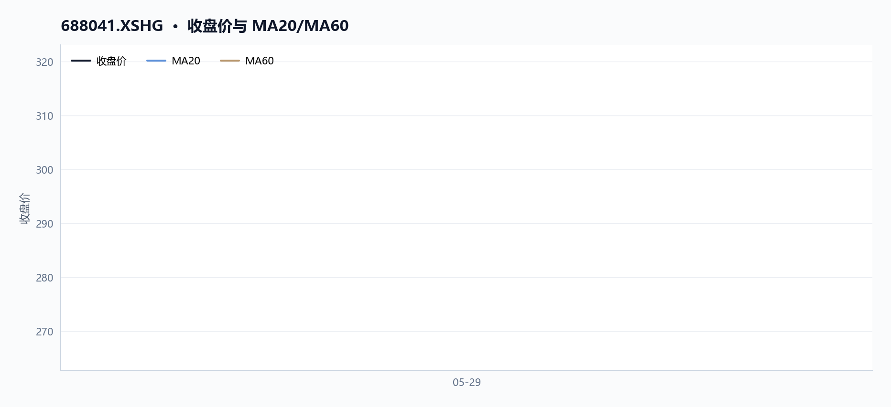
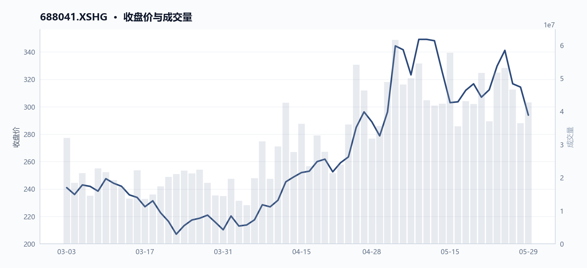
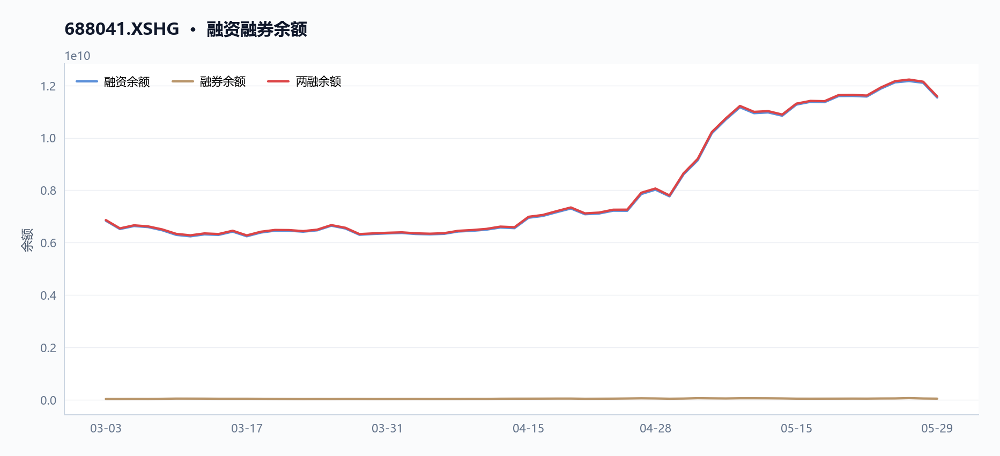
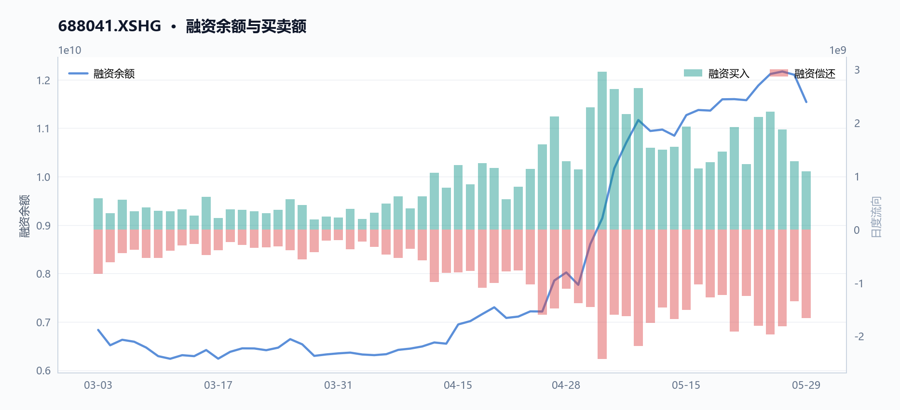
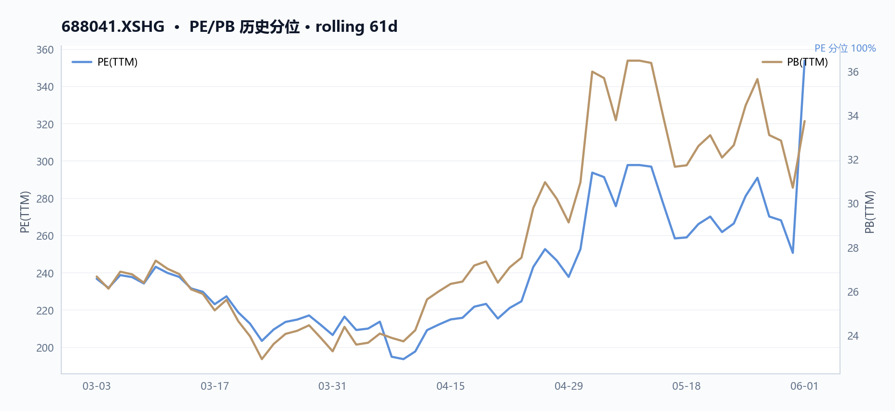
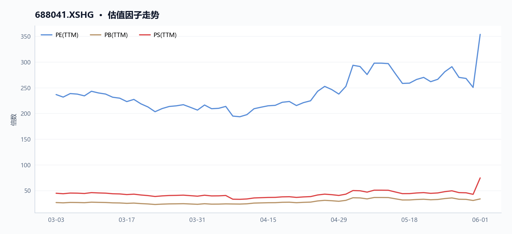
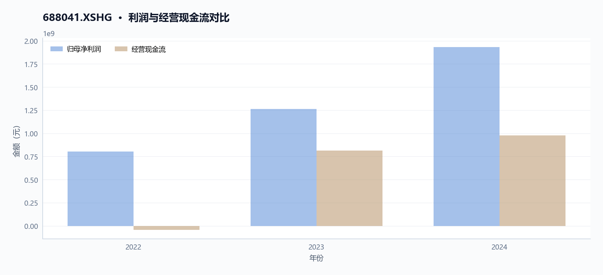
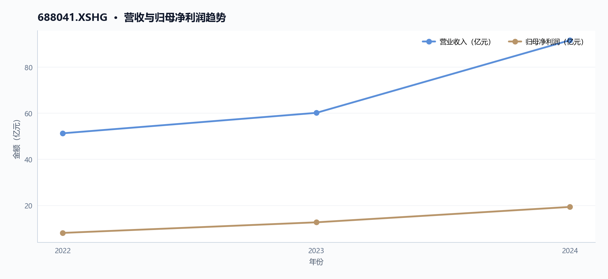
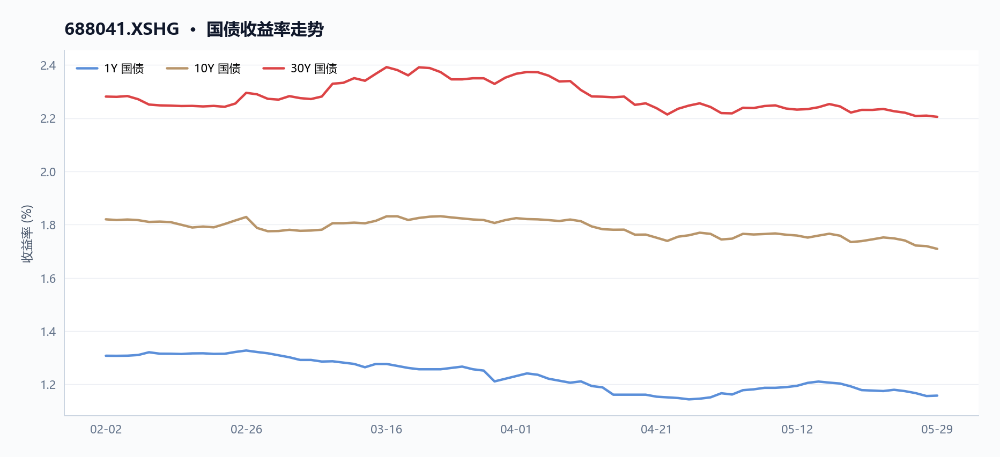
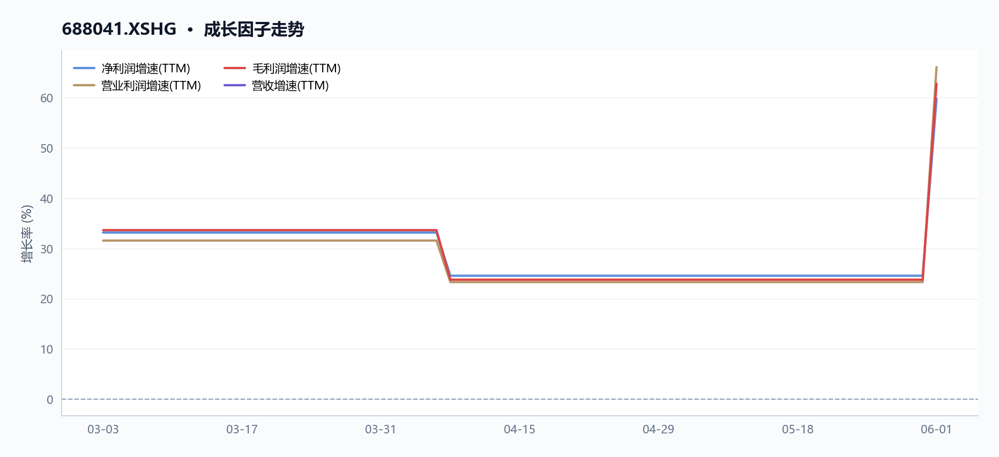

海光信息（688041）：高估值下的盈利增长验证与资金结构分析
执行摘要
海光信息当前核心矛盾在于盈利高速增长与极高估值之间的张力，但资金流向与两融结构变化正加剧短期不确定性。截至2026年6月1日，股价报收293.9元，近60日涨幅达21.95%，但RSI已回落至31.7，显示超卖压力。公司TTM市盈率高达353.77倍，市净率33.73倍，而同期归母净利润同比增长52.87%，毛利率63.72%，基本面支撑强劲。然而，两融余额在5月29日降至115.79亿元，融券余额同步缩减，市场情绪趋于谨慎。
核心指标速览
| 指标 | 数值 |
|---|---|
| 中信一级行业 | 60 |
| 最新收盘价 | 293.9 |
| MA20 | 320.338 |
| MA60 | 265.491 |
| 20 日收益率 | 5.43% |
| 60 日收益率 | 21.95% |
| RSI14 | 31.7051 |
| 20 日均量 | 4459.68 万 |
| PE(TTM) | 353.77 |
| PB(TTM) | 33.73 |
| PS(TTM) | 74.56 |
| 股息率(TTM) | 数据缺失 |
| 总市值 | 6831.23 亿 |
| 融资余额 | 115.41 亿 |
| 融资买入额 | 10.85 亿 |
量价趋势：中期上行但短期震荡
核心结论
截至2026年6月1日，海光信息近60日涨幅约22.0%，中期上行趋势明确，但近5日回调10.9%且RSI降至31.7，短期震荡压力显著。
趋势概览：中期上行趋势确立，短期进入回调震荡
图 · 收盘价与 MA20/MA60

价格位于短均线下、长均线上，呈现震荡整理。
截至2026年6月1日，海光信息（688041.XSHG）收盘价为293.9元。从中期维度看，近60个交易日（自2026年3月3日以来）累计上涨约22.0%，股价仍站稳于60日均线（265.5元）之上，高出约10.7%，中期上行趋势保持完好。然而，短期走势出现明显分化：近20个交易日涨幅收窄至约5.4%，且近5个交易日（2026年5月25日至5月29日）股价从329.68元下跌至293.9元，跌幅达10.9%，同期成交量也萎缩约17.4%，显示短期抛压加重。
| 时间维度 | 区间涨跌幅 | 关键价格/均线对比 |
|---|---|---|
| 近60日（2026-03-03至2026-05-29） | +22.0% | 最新价293.9元，高于60日均线265.5元约10.7% |
| 近20日（2026-04-29至2026-05-29） | +5.4% | 最新价293.9元，低于20日均线320.3元约8.3% |
| 近5日（2026-05-25至2026-05-29） | -10.9% | 成交量从5169万手降至4269万手，缩量下跌 |
技术指标：RSI进入弱势区间，短期动能偏弱
表 · 技术指标快照
| 维度 | 最新收盘价 | MA20 | MA60 | 20 日收益率 | 60 日收益率 | RSI14 | 20 日均量 |
|---|---|---|---|---|---|---|---|
| 最新 | 293.9 | 320.338 | 265.491 | 5.43% | 21.95% | 31.7051 | 4459.68 万 |
截至2026年6月1日，14日相对强弱指标（RSI14）为31.7，已进入30附近的弱势区域，表明短期卖方力量占据主导。结合价格走势，股价在5月12日触及区间高点358.8元后震荡回落，至5月29日已跌破20日均线（320.3元），形成短期均线（MA20）下穿中期均线（MA60）的潜在压力。区间低点出现在3月23日的206.08元，与当前价格相比，区间振幅较大。
量价关系：缩量回调，市场情绪趋于谨慎
图 · 收盘价与成交量

价格先抑后扬，成交量先抑后扬。
近5个交易日的回调伴随成交量萎缩（从5169万手降至4269万手），属于典型的缩量下跌形态，显示主动抛售力量在减弱，但买方承接意愿同样不足。近20个交易日平均成交量为4460万股，低于5月26日峰值（5315万股），表明市场整体交投活跃度在近期高点后有所降温。
两融资金：杠杆资金持续流入，中期看多情绪未改
从两融余额变化看，融资余额从2026年3月3日的68.36亿元增长至2026年5月29日的115.41亿元，增幅约68.9%。期间，融资买入峰值出现在2026年5月6日，单日融资买入额达29.58亿元。杠杆资金的持续净流入，与中期股价上行趋势一致，反映出部分投资者对中期走势仍持乐观态度。但需注意，短期股价回调可能对融资盘形成压力。
估值与基本面：高估值与高增长并存，构成中期支撑与短期约束
从估值因子看，截至2026年6月1日，公司市盈率（TTM）为353.8倍，市净率为33.7倍，处于历史较高水平。然而，公司同期归母净利润同比增长约52.9%，营收同比增长约52.4%，高增长为高估值提供了一定支撑。但需关注的是，2024年全年净现比仅为0.36（归母净利润19.31亿元，经营现金流9.77亿元），且存货同比增速（405.1%）远超营收增速（52.4%），MD&A中公司解释为“战略备货增加”。利润现金含量偏低与存货激增，是中期趋势中需要持续跟踪的风险点。
数据局限 - 未提供期货、期权等衍生品持仓数据，无法评估衍生品市场对股价的预期。 - 未提供大宗交易、龙虎榜等资金流向数据，无法分析主力资金的具体动向。 - 未提供行业可比公司的量价数据，无法进行横向对比分析。
资金流向：主力资金动向与市场情绪
核心结论
截至2026年6月1日，海光信息（688041.XSHG）近20日主力资金呈净流出态势，两融余额虽创阶段新高但股价回调，市场情绪趋于谨慎。
趋势概览
主力资金动向：量价背离，资金净流出 近20个交易日（2026年4月29日至5月29日），海光信息股价累计上涨5.43%（从278.77元升至293.9元），但日均成交额从期初的约16.62亿元下降至期末的约12.93亿元，成交额降幅达22.21%，显示上涨过程中主动买盘不足。近5个交易日（5月25日至5月29日），股价下跌10.85%（从329.68元跌至293.9元），成交额同步萎缩22.21%（从16.62亿元降至12.93亿元），表明下跌过程中主力资金呈净流出态势。量价背离现象（股价上涨但成交额下降）暗示市场追高意愿减弱。
表 · 成交活跃度
| 指标 | 数值 |
|---|---|
| 20 日均量 | 4459.68 万 |
| 近12日日均成交额 | 142.61 亿 |
| 近12日最高成交额 | 178.21 亿（2026-05-15） |
| 近12日最低成交额 | 108.96 亿（2026-05-18） |
| 近12日换手率区间 | 1.53% ~ 2.48% |
| 主力资金流向 | 数据缺失 |
两融资金：余额创新高，但追涨意愿减弱 截至2026年5月29日，海光信息融资余额为115.41亿元，较3月3日的68.36亿元大幅增长68.83%。融资余额在5月6日达到单日峰值29.58亿元后，股价于5月12日触及阶段高点358.8元，随后震荡回落。截至5月29日收盘价293.9元已较5月12日高点下跌18.09%，表明融资资金在股价高位后追涨意愿减弱，部分资金可能已获利了结。两融余额与股价走势的背离（余额创新高但股价回调）进一步印证市场情绪趋于谨慎。
图 · 融资融券余额

融资余额曲线整体上行。
图 · 融资余额与买卖额

表 · 两融区间变动
| 指标 | 数值 |
|---|---|
| 区间起始 | 2026-03-03 |
| 区间结束 | 2026-05-29 |
| 融资余额（期初） | 68.36 亿 |
| 融资余额（期末） | 115.41 亿 |
| 融资余额变动 | 47.06 亿 |
| 变动幅度 | 68.84% |
| 融券余额（期初） | 0.26 亿 |
| 融券余额（期末） | 0.38 亿 |
| 融券余额变动 | 0.13 亿 |
| 融券变动幅度 | 48.99% |
| 融资买入峰值 | 29.58 亿（2026-05-06） |
表 · 融资融券快照
| 统计日期 | 融资余额 | 融券余额 | 两融余额 | 融资买入额 | 融资偿还额 | 融券余量 |
|---|---|---|---|---|---|---|
| 2026-05-29 | 115.41 亿 | 0.38 亿 | 115.79 亿 | 10.85 亿 | 16.60 亿 | 12.98 万 |
市场情绪：技术指标转弱，估值压力凸显 RSI指标为31.71，已进入偏弱区域（低于50）。当前股价293.9元低于20日均线320.34元（折价8.25%），但高于60日均线265.49元（溢价10.70%），短期趋势转弱，中期趋势尚可。估值方面，截至6月1日，PE（TTM）为353.77倍，PB为33.73倍，均处于历史高位区间（3月3日PE为236.68倍，PB为26.66倍），高估值对资金持续流入形成制约。
| 指标 | 2026年3月3日 | 2026年6月1日 | 变化 |
|---|---|---|---|
| PE（TTM） | 236.68倍 | 353.77倍 | +49.5% |
| PB | 26.66倍 | 33.73倍 | +26.5% |
| 融资余额 | 68.36亿元 | 115.41亿元 | +68.8% |
| 股价 | 约240元 | 293.9元 | +22.5% |
数据局限 - 未提供主力资金净流入/流出具体数值，仅能通过量价关系间接推断。 - 未提供融券余额数据，无法评估融券做空力量。 - 未提供股东户数或机构持仓变动数据，无法判断筹码集中度变化。
表 · 股本结构快照
| 项目 | 数值 |
|---|---|
| 统计日期 | 2026-06-01 |
| 总股本 | 23.24 亿 |
| 流通 A 股 | 23.24 亿 |
| 自由流通股本 | 8.41 亿 |
| 自由流通占比 | 36.2% |
| 非自由流通占比 | 63.8% |
估值分析：高PE与盈利增速的匹配度
核心结论
截至2026年6月1日，海光信息PE(TTM)达353.77倍，对应归母净利润增速52.87%，隐含PEG约6.69倍，估值与盈利增速匹配度极低。
趋势概览
估值倍数与盈利增速对比
图 · PE/PB 历史分位

图 · 估值因子走势

多条曲线整体向上，指标同步改善。
| 指标 | 2026-03-03 | 2026-06-01 | 变动幅度 |
|---|---|---|---|
| PE(TTM) | 236.68倍 | 353.77倍 | +49.5% |
| 归母净利润增速(TTM) | 25.40% | 52.87% | +27.47pct |
| 营收增速(TTM) | 33.66% | 52.40% | +18.74pct |
| 总市值 | 5601.65亿元 | 6831.23亿元 | +21.9% |
图表解读：上表对比了2026年3月3日至6月1日期间海光信息（688041.XSHG）的估值与盈利增长变化。PE(TTM)从236.68倍升至353.77倍，增幅达49.5%，而同期归母净利润增速（TTM）仅从25.40%提升至52.87%，提升幅度为27.47个百分点。估值扩张速度（+49.5%）显著快于盈利增速提升幅度（+27.47pct），表明股价上涨主要由估值驱动而非盈利改善。总市值同期增长21.9%，从5601.65亿元增至6831.23亿元，进一步印证了估值倍数扩张对市值增长的贡献。
PEG与估值扩张分析
截至2026年6月1日，海光信息PE(TTM)为353.77倍，对应归母净利润增速（TTM）为52.87%，据此计算的隐含PEG约为6.69倍（PE/归母净利润增速），显著高于1倍合理阈值。自2026年3月3日至6月1日，PE从236.68倍扩张至353.77倍，增幅49.5%，而同期归母净利润增速仅从25.40%提升至52.87%，估值扩张速度（+49.5%）远超盈利增速提升幅度（+27.47pct），表明股价上涨主要由估值驱动而非盈利改善。
盈利质量对估值支撑的审视
| 财务指标 | 2022年 | 2023年 | 2024年 |
|---|---|---|---|
| 营收（亿元） | 51.25 | 60.12 | 91.62 |
| 归母净利润（亿元） | 8.04 | 12.63 | 19.31 |
| 经营现金流（亿元） | -0.43 | 8.14 | 9.77 |
| 净现比 | -0.05 | 0.64 | 0.36 |
2024年海光信息净现比仅0.36，低于0.5阈值，表明净利润转化为经营现金流的能力偏弱。MD&A解释称“经营活动产生的现金流量净额变动原因主要系报告期内，公司围绕通用计算市场，持续保持高强度的研发投入”，但研发费用增长46.05%的同时，经营现金流仅增长20.08%，收入增长52.4%与现金流增长20.1%的背离，削弱了高盈利增速对估值的支撑力度。
存货与营运资本压力
2024年海光信息存货增速达405.1%（从10.74亿元增至54.25亿元），远超收入增速52.4%。MD&A在经营风险中明确提示“公司战略备货增加，期末存货账面价值542,528.23万元，占期末资产总额的比例为19.00%”，并指出“若未来市场环境发生变化、竞争加剧或技术更新导致存货过时，将导致公司存货跌价风险增加”。存货周转率从2023年的约2.24次降至2024年的约1.02次（基于存货与营业成本估算），营运资本占用显著加重，进一步削弱了盈利增长的质量。
数据局限
- 缺乏行业可比公司PE及增速数据，无法进行横向对比分析
- 未提供未来盈利预测数据，无法计算前瞻PEG
- 缺少历史5年以上估值数据，无法评估估值中枢及历史分位
- 未提供研发支出资本化对利润的具体影响金额，无法量化利润质量调整后的真实PE
经营质量：营收与利润高增长背后的现金流与效率
核心结论
2024年海光信息（688041.XSHG）营收与归母净利润均增长超52%，但经营现金流增速仅20.1%，净现比0.36，利润现金含量显著偏弱。
利润高增长与现金流的背离
图 · 利润与经营现金流对比

归母净利润与经营现金流净额多年对比，用于判断利润的现金含量（净现比）。
图 · 营收与归母净利润趋势

近年营收（柱）与归母净利润（折线）双轴对比，观察收入规模与盈利能力的匹配度。
海光信息2024年利润表表现强劲，但现金流转化效率不足。根据年报数据，2024年营收91.62亿元，同比增长52.4%；归母净利润19.31亿元，同比增长52.87%。然而，经营活动产生的现金流量净额仅9.77亿元，同比增长20.08%，增速远低于利润增速。
| 指标 | 2022年 | 2023年 | 2024年 | 2024年同比增速 |
|---|---|---|---|---|
| 营收（亿元） | 51.25 | 60.12 | 91.62 | +52.4% |
| 归母净利润（亿元） | 8.04 | 12.63 | 19.31 | +52.87% |
| 经营现金流（亿元） | -0.43 | 8.14 | 9.77 | +20.08% |
| 净现比 | -0.05 | 0.64 | 0.36 | - |
2024年净现比仅为0.36，低于0.5的阈值，意味着每1元净利润仅带来0.36元经营现金流入。管理层在MD&A中解释经营活动产生的现金流量净额变动主要系“营业收入增长带动”，但并未直接回应利润与现金流的背离。从数据看，收入增长52.4%而经营现金流仅增长20.08%，增速差距达32个百分点，利润质量存疑。
存货激增：战略备货还是库存积压？
营运效率方面，最突出的矛盾是存货的急剧膨胀。2024年末存货账面价值高达54.25亿元，较2023年末的10.74亿元激增405.1%，而同期收入增速仅为52.4%。
| 指标 | 2022年 | 2023年 | 2024年 | 2024年同比增速 |
|---|---|---|---|---|
| 存货（亿元） | 10.95 | 10.74 | 54.25 | +405.1% |
| 营收（亿元） | 51.25 | 60.12 | 91.62 | +52.4% |
| 存货占资产总额比例 | - | - | 19.00% | - |
管理层在MD&A的风险提示中明确指出，存货增加系“公司战略备货增加”，并提示了“存货跌价风险”。存货增速远超收入增速，且存货占总资产比例已达19%，若未来市场环境变化或技术迭代，可能面临较大的减值压力。此外，应收账款增速（52.6%）也略高于收入增速（52.4%），营运资本占用持续加重。
效率与现金流的背离
尽管利润表表现强劲，但现金流与营运效率指标揭示了增长背后的隐忧。2024年收现比为1.17，表明收入回款尚可，但利润转化为现金的能力不足，主要拖累来自存货的巨额占用。公司需在高速增长与运营效率之间寻求平衡，避免因激进备货导致资金链承压。
-
数据局限
本节使用的净现比、收现比等指标基于年报披露的经营活动现金流与利润数据计算，未考虑非经常性损益及季节性波动影响。存货跌价风险的具体量化数据未在年报中披露，无法进一步评估潜在减值规模。
宏观背景：利率环境对估值的潜在影响
核心结论
截至2026年6月1日，海光信息PE（TTM）达353.77倍，较3月3日上升49.5%，高估值对利率上行敏感，且无股息缓冲。
估值倍数与利率敏感度
图 · 国债收益率走势

多条曲线整体向下，指标同步走弱。
截至2026年6月1日，海光信息（688041.XSHG）最新估值因子显示PE（TTM）为353.77倍、PB（TTM）33.73倍、PS（TTM）74.56倍，均处于历史高位区间。对比2026年3月3日，PE从236.68倍升至353.77倍，PB从26.66倍升至33.73倍，PS从44.76倍升至74.56倍，期间总市值从5601.65亿元增至6831.23亿元，增幅22.0%。
| 估值指标 | 2026-03-03 | 2026-06-01 | 变动幅度 |
|---|---|---|---|
| PE（TTM） | 236.68倍 | 353.77倍 | +49.5% |
| PB（TTM） | 26.66倍 | 33.73倍 | +26.5% |
| PS（TTM） | 44.76倍 | 74.56倍 | +66.6% |
| 总市值（亿元） | 5601.65 | 6831.23 | +22.0% |
高PE倍数意味着估值对无风险利率变动极为敏感——若利率上行，折现率提高将直接压缩远期现金流现值，对高估值标的形成更大压力。当前公司未披露股息率（最新股息率为空），缺乏股息缓冲，进一步放大了利率风险敞口。
盈利增长与估值支撑
尽管估值倍数高企，公司盈利增长提供了一定支撑。最新净利润同比增长因子为59.71%，归母净利润同比增长52.87%，营收同比增长52.4%。2024年全年归母净利润19.31亿元，较2023年12.63亿元增长52.9%，较2022年8.04亿元增长140.2%。但需注意，2024年净现比仅0.36（经营现金流9.77亿元 vs 归母净利润19.31亿元），利润现金含量偏低，削弱了盈利对估值的实际支撑力度。
| 财务指标 | 2022年 | 2023年 | 2024年 |
|---|---|---|---|
| 营收（亿元） | 51.25 | 60.12 | 91.62 |
| 归母净利润（亿元） | 8.04 | 12.63 | 19.31 |
| 经营现金流（亿元） | -0.43 | 8.14 | 9.77 |
| 净现比 | -0.05 | 0.64 | 0.36 |
杠杆与流动性缓冲
截至2026年6月1日，资产负债率20.69%，流动比率4.15，速动比率2.91，财务杠杆较低且短期偿债能力充裕。低负债率意味着公司对利率上行的直接财务成本冲击较小，但估值层面的间接压力（折现率上升）依然显著。
数据局限 - 未提供基准利率（如10年期国债收益率）或信用利差数据，无法直接测算利率变动对估值的量化影响。 - 未提供行业平均PE/PB对比数据，无法判断相对估值分位。 - 未提供历史估值波动区间，无法评估当前估值在自身历史中的位置。
风险提示：高估值、存货激增与流动性风险
核心结论
截至2026年6月1日，海光信息PE(TTM)达353.77倍、存货较2023年激增405.1%，且净现比仅0.36，高估值、存货积压与利润现金含量偏低三重风险并存。
高估值与市场回调压力
图 · 成长因子走势

多条曲线整体向上，指标同步改善。
截至2026年6月1日，海光信息（688041.XSHG）PE(TTM)为353.77倍、PB为33.73倍、PS为74.56倍，均处于历史高位区间。对比2026年3月3日，PE从236.68倍上升至353.77倍（+49.5%），PB从26.66倍升至33.73倍（+26.5%），PS从44.76倍升至74.56倍（+66.6%），估值扩张幅度显著。
同期股价从区间低点206.08元（2026年3月23日）上涨至近期高点358.80元（2026年5月12日），随后回调至293.90元（2026年5月29日），近5个交易日（2026年5月25日至5月29日）跌幅达10.85%。RSI指标为31.71，已进入偏弱区域，显示短期卖压增大。
| 估值指标 | 2026-03-03 | 2026-06-01 | 变动幅度 |
|---|---|---|---|
| PE(TTM) | 236.68 | 353.77 | +49.5% |
| PB | 26.66 | 33.73 | +26.5% |
| PS | 44.76 | 74.56 | +66.6% |
存货激增与营运效率恶化
2024年末存货账面价值达54.25亿元，较2023年的10.74亿元激增405.1%，远高于同期营收增速52.4%。公司MD&A中明确提示“战略备货增加”导致存货跌价风险，期末存货占资产总额比例达19.00%。存货增速远超收入增速，表明可能存在去库存压力或备货过于激进，若市场环境变化或技术迭代，将面临较大减值风险。
| 财务指标 | 2022年 | 2023年 | 2024年 | 2024年同比增速 |
|---|---|---|---|---|
| 营收（亿元） | 51.25 | 60.12 | 91.62 | +52.4% |
| 存货（亿元） | 10.95 | 10.74 | 54.25 | +405.1% |
| 归母净利润（亿元） | 8.04 | 12.63 | 19.31 | +52.9% |
| 经营现金流（亿元） | -0.43 | 8.14 | 9.77 | +20.1% |
流动性风险：利润现金含量偏低
表 · 最新偿债与流动性
| 维度 | 流动比率 | 速动比率 | 资产负债率 |
|---|---|---|---|
| 最新 | 4.15 倍 | 2.91 倍 | 20.68% |
2024年归母净利润19.31亿元，但经营活动现金流净额仅9.77亿元，净现比为0.36，低于0.5的阈值，表明净利润转化为经营现金流的能力较弱，利润质量存疑。MD&A中公司解释经营现金流增长20.1%主要受研发费用增长46.05%及定期存款配置增加影响，但未直接回应净现比偏低问题。此外，应收账款增速（52.6%）略高于营收增速（52.4%），营运资本占用持续加重，可能带来资金压力。
数据局限 - 未提供应收账款周转率、流动资产周转率等效率指标，无法进一步量化营运资本周转效率。 - 未提供存货周转率数据，无法直接计算存货周转天数变化。 - 未提供有息负债结构及短期偿债压力指标，流动性风险评估受限。 - 未提供股息率数据，无法评估股东现金回报水平。
数据与工具说明
免责声明
本报告仅供课程研究与信息展示，不构成投资建议。